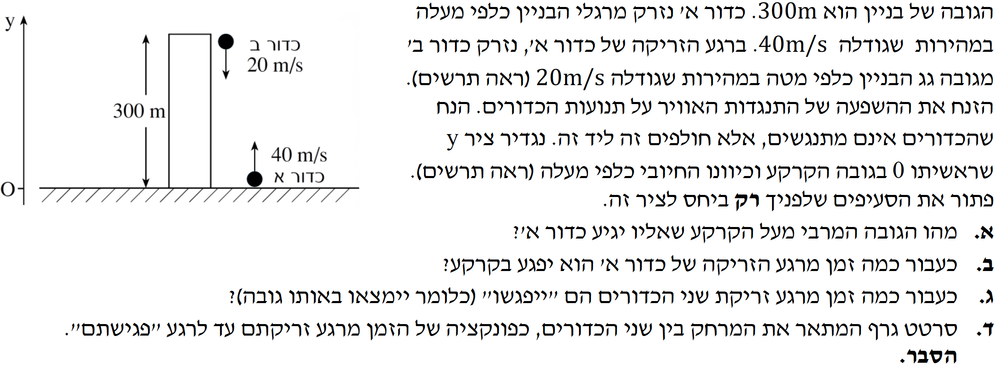

שלום תלמידים יקרים! הגעתם לפתרון מודרך, מפורט ומוסבר צעד-אחר-צעד. מומלץ לקרוא את ההערות המפוזרות בפתרון כדי להבין לעומק את הפיזיקה שמאחורי המשוואות.

[תמונת השאלה המקורית]לא נמצאה תמונה בשם question-image.png באותה תיקייה של קובץ ה-HTML.
שלב 0: הגדרת מערכת הצירים ונתוני הפתיחה
לפני שניגש למספרים, בואו נסדר את הנתונים הראשוניים של כדור א' (את כדור ב' נכיר בהמשך, כשנצטרך אותו). בשאלות קינמטיקה, הבחירה החשובה ביותר שלנו היא מערכת הצירים.
ראשית הצירים ($y=0$): מוגדרת בקרקע.
הכיוון החיובי: מוגדר כלפי מעלה.
מיקום התחלתי (כדור א'): הכדור נזרק מהקרקע, לכן $y_{0A} = 0 \text{ m}$.
מהירות התחלתית (כדור א'): הכדור נזרק כלפי מעלה (לכיוון החיובי), לכן $v_{0A} = +40 \text{ m/s}$.
תאוצת הכובד: גודל תאוצת הנפילה החופשית הוא תמיד $g = 10 \text{ m/s}^2$ כלפי מטה (לכיוון מרכז כדור הארץ).
מכיוון שהגדרנו את הכיוון החיובי של ציר ה-$y$ כלפי מעלה, ואילו כוח הכבידה (ומכאן גם התאוצה) פועל כלפי מטה, התאוצה של הגופים במערכת שלנו תהיה שלילית. כלומר, במשוואות שלנו נציב $a = -g = -10 \text{ m/s}^2$.
בנוסף, שימו לב שהיחידות כבר נתונות במערכת התקנית (MKS) - מטרים ושניות, ולכן אין צורך בהמרת יחידות בשאלה זו!
סעיף א': הגובה המרבי של כדור א'
מה נתון לנו?
עבור כדור א': $y_0 = 0 \text{ m}$, $v_0 = 40 \text{ m/s}$, $a = -10 \text{ m/s}^2$.
מה מחפשים?
את הגובה המרבי (נסמן כ-$y_{max}$). התנאי הפיזיקלי להגעת גוף נזרק לגובהו המרבי הוא שמהירותו הרגעית מתאפסת. לכן, בנקודת שיא הגובה: $v = 0 \text{ m/s}$.
נוסחאות מדף הנוסחאות:
מכיוון שאין לנו נתון על הזמן, נבחר להשתמש בנוסחה המקשרת בין מהירות, תאוצה ומיקום, כפי שהיא מופיעה בדף הנוסחאות (אותה נתאים לציר ה-$y$):
\( v^2 = v_0^2 + 2a(x - x_0) \)
מדוע המהירות מתאפסת? כדור א' נזרק כלפי מעלה עם מהירות חיובית. התאוצה שלו פועלת כלפי מטה (שלילית). לכן, גודל המהירות הולך וקטן ככל שהוא עולה, עד לרגע שבו המהירות שווה לאפס. מיד לאחר מכן הכדור מתחיל ליפול ומהירותו הופכת לשלילית, וגודלה הולך וגדל.
זוהי משוואה ריבועית. נוציא גורם משותף $5t$ כדי לפתור אותה בקלות:
$$ 5t(8 - t) = 0 $$
הפתרונות האפשריים למשוואה הם:
$t = 0 \text{ s}$ - זהו רגע הזריקה, בו הכדור אכן נמצא על הקרקע.
$t = 8 \text{ s}$ - זהו הרגע בו הכדור חוזר ופוגע בקרקע.
המתמטיקה חכמה! היא נתנה לנו שני פתרונות כי הכדור אכן נמצא ב-$y=0$ פעמיים. כמובן שהתשובה שאנחנו מחפשים היא הפעם השנייה. שימו לב שהתנועה סימטרית - זמן העלייה עד לגובה המרבי הוא $4\text{ s}$ (ניתן לראות מ-$v=v_0+at$), וזמן הירידה הוא גם $4\text{ s}$, סך הכל $8\text{ s}$.
תשובה סופית לסעיף ב': כדור א' יפגע בקרקע כעבור 8 שניות מרגע זריקתו.
סעיף ג': זמן הפגישה בין הכדורים
כעת נכנס לתמונה כדור ב'. בואו נאסוף את הנתונים שלו מתוך השאלה.
מה נתון לנו?
גובה הבניין הוא $300\text{ m}$. כדור ב' נזרק מהגג, לכן מיקומו ההתחלתי הוא $y_{0B} = 300 \text{ m}$.
כדור ב' נזרק כלפי מטה. מכיוון שהגדרנו את הכיוון למעלה כחיובי, המהירות ההתחלתית שלו שלילית: $v_{0B} = -20 \text{ m/s}$.
גם על כדור ב' פועל אך ורק כוח הכבידה לאחר שנזרק, ולכן תאוצתו זהה: $a = -10 \text{ m/s}^2$.
כדור א' נשאר עם נתוניו הקודמים. שני הכדורים נזרקו באותו רגע ($t=0$).
מה מחפשים?
אנו מחפשים את הזמן $t$ בו שני הכדורים יהיו באותו גובה. מבחינה מתמטית, זה אומר שנדרוש: $y_A(t) = y_B(t)$.
שימו לב לקסם המתמטי - לשני הכדורים יש את אותו איבר התאוצה ($-5t^2$). לכן, כאשר אנו משווים את המשוואות, האיבר הזה מצטמצם בשני האגפים. למעשה, במערכת ייחוס של אחד הכדורים, השני נע במהירות קבועה אליו!
מה קיבלנו? פונקציה ליניארית (קו ישר) מהצורה $y = mx + n$!
המרחק ההתחלתי הוא $n = 300\text{ m}$ (גובה הבניין).
קצב שינוי המרחק (השיפוע $m$) הוא $-60 \text{ m/s}$. זהו בדיוק סכום הגדלים של המהירויות ההתחלתיות (המהירות היחסית ביניהם). בגלל שהם חווים את אותה התאוצה, התאוצה לא משפיעה על המרחק היחסי ביניהם, והם "מתקרבים" זה לזה בקצב קבוע.
נדרשנו לשרטט את הגרף מתחילת התנועה ($t=0$) ועד רגע המפגש ($t=5 \text{ s}$).
בזמן $t=0$: המרחק הוא $D(0) = 300 \text{ m}$.
בזמן $t=5$: המרחק הוא $D(5) = 300 - 60 \cdot 5 = 0 \text{ m}$ (הם נפגשים).
הגרף (מרחק במטרים כפונקציה של הזמן בשניות):
השאלה המקורית
[תמונת השאלה המקורית]לא נמצאה תמונה בשם question-image.png באותה תיקייה של קובץ ה-HTML.